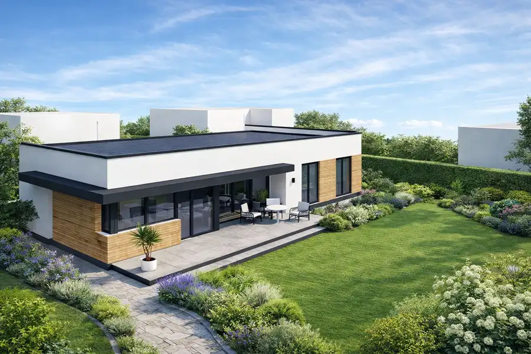
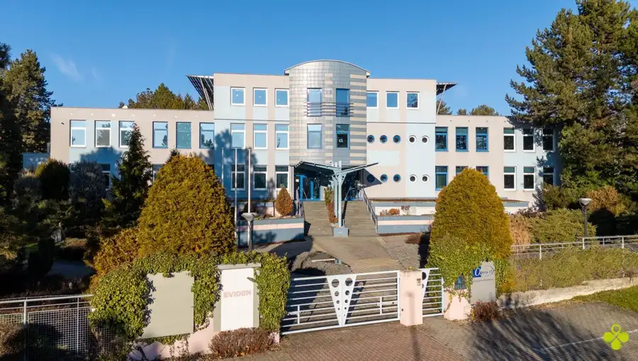

Rozsiahly rodinný dom s veľkým pozemkom Veľká Lehôtka Prievidza
Prievidza
- Plocha500 m²
- StavČiastočná rekonštrukcia
- VlastníctvoOsobné
O nehnuteľnosti
Hľadáte nehnuteľnosť, ktorá ponúka dostatok priestoru pre komfortné rodinné bývanie, veľkorysý pozemok a zároveň možnosť prispôsobiť si celý dom podľa vlastných predstáv?Priestranný rodinný dom vo Veľkej Lehôtke, mestskej časti Prievidze, situovaný na veľkorysom pozemku s výmerou 1 312 m².Nehnuteľnosť ponúka približne 250 m² úžitkovej plochy a vďaka svojim rozmerom, dispozícii a veľkému pozemku predstavuje zaujímavú príležitosť pre záujemcu, ktorý hľadá veľký rodinný dom s možnosťou rekonštrukcie podľa vlastných predstáv.Základné informácie o domeLokalita: Veľká Lehôtka – PrievidzaPozemok: 1 312 m²Úžitková plocha: cca 250 m²Zastavaná plocha: 270 m²Stav: čiastočná rekonštrukcia / prevažne pôvodný stavCena: 239 990 €Dom bol v minulosti využívaný ako pohostinstvo, vďaka čomu disponuje veľkorysými vnútornými priestormi a pevnou konštrukciou. Aktuálne v jednej časti objektu nachádza kompletne zrekonštruovaný a zariadený byt. Ostatné priestory sú prevažne v pôvodnom stave.Novému majiteľovi umožňuje prispôsobiť si dom vlastným potrebám – vytvoriť priestranné rodinné bývanie, prípadne kombinovať bývanie s pracovným, hosťovským alebo ďalším obytným priestorom.Hlavné výhody domuveľký pozemok 1 312 m²približne 250 m² úžitkovej plochymožnosť vytvorenia nadštandardne priestranného rodinného domujedna časť nehnuteľnosti už zrekonštruovaná a zariadenávšetky potrebné inžinierske sietekanalizácia vedená v komunikácii, aktuálne využívaná žumpapokojná lokalita v bezprostrednej blízkosti Prievidzedostatok priestoru na záhradu, oddychovú zónu či ďalšie využitie pozemkuBonus – investičný potenciál domuNehnuteľnosť má zároveň schválené využitie na bytovú výstavbu. K dispozícii kompletná projektová dokumentácia na prestavbu objektu na 8 bytových jednotiek zahrnutá v kúpnej cene.Nový vlastník tak nie je odkázaný iba na jedno využitie nehnuteľnosti. Dom môže využívať ako veľkorysé rodinné bývanie, pričom si do budúcnosti zachováva aj zaujímavý investičný potenciál.V prípade akýchkoľvek ďalších otázok nám neváhajte zavolať alebo napísať SMS na tel. 0915 756 855, alebo napíšte mail na peter.vrtak@vasarealitna.sk alebo vám ich radi zodpovieme na adrese Vaša Realitná, Bojnická cesta 4, Prievidza.
Parametre
| Druh | Rodinný dom |
|---|---|
| Druh domu | Rodinná vila |
| Dátum zverejnenia | 20. 8. 2026 |
| Energetický certifikát budovy | nie je |
| Orientácia | Juhozápadná |
| Plocha pozemku | 1320 m² |
| Počet nadzemných podlaží | 2 |
| Počet podzemných podlaží | 1 |
| Prístupová komunikácia | Asfaltová |
| Rok výstavby | 1977 |
| Stav nehnuteľnosti | Čiastočná rekonštrukcia |
| Telekomunikácie | Telefón, Internet |
| Terén pozemku | Rovinatý |
| Typ | Predaj |
| Typ konštrukcie | Tehlová |
| Vlastníctvo | Osobné |
| Vybavenie | Terasa, Pivnica, Vonkajšie parkovacie miesto, Vyhradené parkovanie |
| Vykurovanie | Ústredné |
| Zastavaná plocha | 270 m² |
| Úžitková plocha | 500 m² |
Kde to je


Mohlo by Vás zaujímať

PozemokNové10 229 000 €Stavebný pozemok v Prievidzi – pri mestskom parku ul. Riečna Prievidza 1195 m² Hľadáte ideálne miesto na výstavbu rodinného domu v tichej lokalite s výbornou dostupnosťou k občianskej vybavenosti v Prievidzi ?IDEÁLNE MIESTO PRE…
Komerčné priestoryNové10 Cena dohodouReprezentatívne kancelárske priestory Vinohradnícka Prievidza Prievidza 136 m² Ponúkame na prenájom veľmi pekné, reprezentatívne kancelárske priestory s rozlohou 136 m² v modernej administratívnej budove na Vinohradníckej ulici…